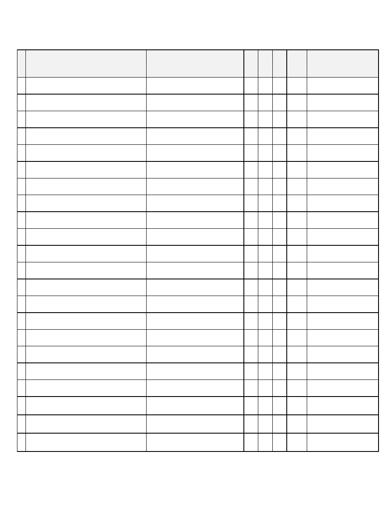
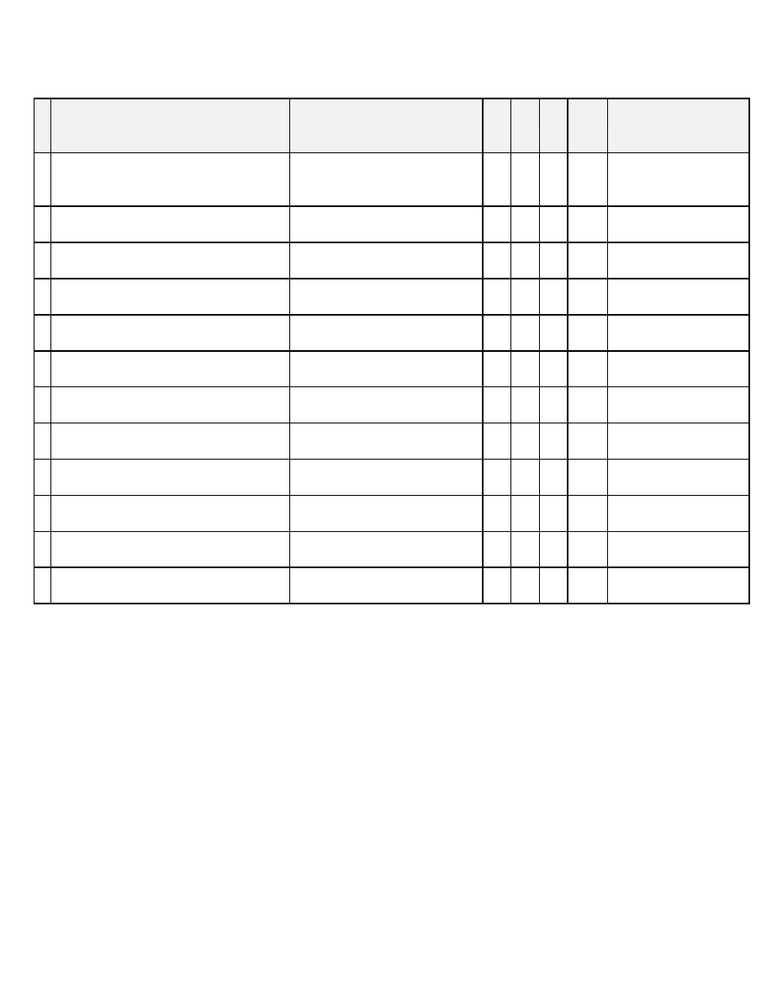
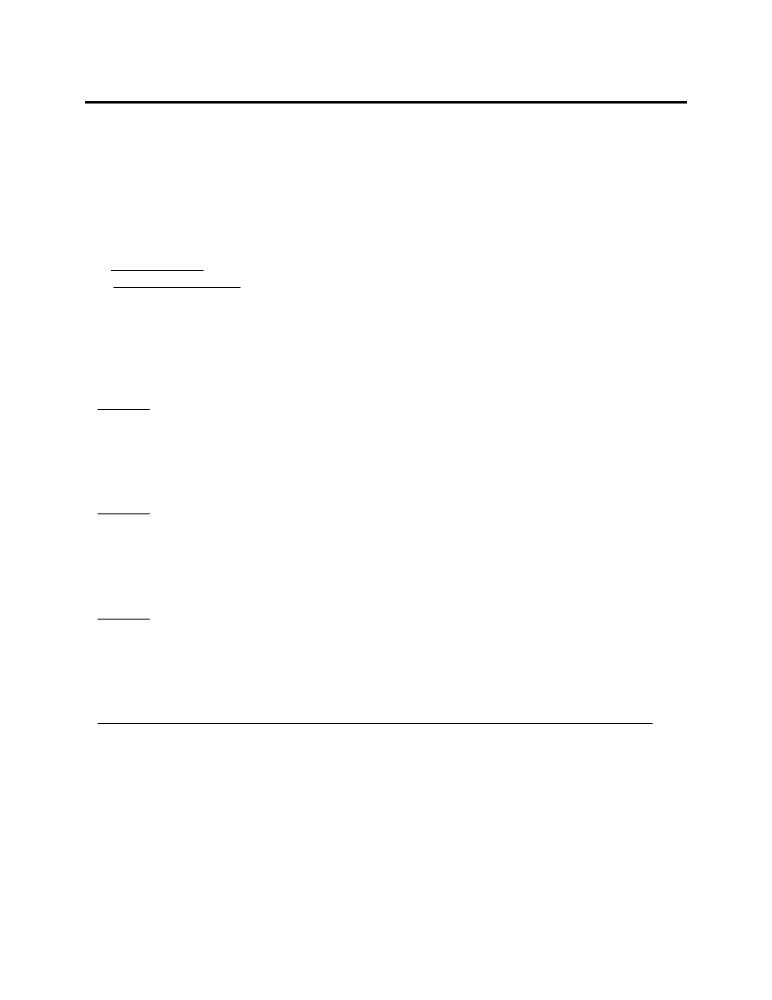

FINAL REPORT
Procurement System Review
of
HAMPTON ROADS TRANSIT
Norfolk, Virginia
Dates of Site Visit: February 7-11, 2011
Prepared by:
Leon Snead & Company, P.C
.
416 Hungerford Drive, Suite 400
Rockville, MD 20850

Leon Snead & Company, P.C.
1
EXECUTIVE SUMMARY
Under contract to the United States Department of Transportation, Federal Transit
Administration (FTA), Leon Snead & Company, P.C., performed a review of the Hampton
Roads Transit (HRT) procurement system to assess its compliance with the requirements of the
FTA Circular 4220.1F. The procurement system review (PSR) was conducted in Norfolk,
Virginia during the period from February 7 through February 11, 2011.
The review assessed the grantee's compliance with 56 "elements," or requirements, as defined in
FTA Circular 4220.1F. The review assessment is divided into levels of findings as defined in
circular; (a) Not Deficient - indicates that the grantee complied with the basic requirement of
the element and (b) Deficient - indicates that the grantee did not always comply with the
requirements of the element.
The review covered 40 contracts and purchase orders awarded by HRT valued at more than $265
million. During the 24-month period ended December 31, 2010, covered by the PSR, HRT
awarded about 114 contracts and 33,015 purchase orders for approximately $537 million.
We found both strengths and weaknesses in the HRT's procurement system. Our review of the
procurement operations disclosed that the grantee had no deficiencies with respect to 31 elements
(procurement requirements) of the FTA Circular 4220.1F and it had deficiencies relative to 24
elements. Compliance with one element in the FTA Circular did not apply to the contract files
reviewed (See Appendix I).
HRT’s procurement system was strong with respect to the following procurement elements: (a)
adequate solicitation; (b) written procurement selection procedures; (c) complete specifications;
(d) price quotations for small purchases; (e) evaluation of RFP; and (f) written record of
procurement history.
The principal weaknesses relate to HRT’s need to implement procurement policies contained in
FTA Circular 4220.1F. HRT needs to comply with FTA requirements in the following areas:
(a) the documentation supporting independent cost estimates; (b) brand name restrictions; (c)
sole source justifications and related cost analysis requirement; (d) lack of properly defined time
and material contract provisions; (e) lack of documentation for pre-award and post-delivery of
rolling stock; (f) written standards of conduct; (g) contract administration system; and (h)
procurement policies and procedures.
Practices that could be followed by HRT as described in the FTA Best Practices Procurement
Manual are included in this report. The report also includes advisory comments to correct
elements with "deficiencies" and to assist HRT in its procurement practices.
We believe that when HRT implements the corrective actions recommended in the report, its
procurement system will be strengthened and will be in compliance with FTA Circular 4220.1F.
Leon Snead & Company, P.C.
2
I.
PROCUREMENT SYSTEM REVIEW BACKGROUND
Background
The objectives of the Procurement System Review (PSR) are to encourage and facilitate
improved grantee procurement operations, promote the use of best practices, and assess HRT’s
compliance with all Federal requirements. Specifically, the PSR ensures improved and greater
compliance with the requirements of Federal Transit Administration (FTA) Circular 4220.1F and
the Pre-Award and Post-Delivery Rule. The PSR is designed to be a customer-oriented review
that encourages working relationships between FTA and HRT.
The PSR of the HRT was performed in accordance with FTA procedures and included a risk
assessment phase and contract review phase. During the assessment phase we obtained an
understanding of the grantee’s procurement system environment and assessed its risk for
noncompliance. During the contract review phase we assessed the grantee’s compliance with
FTA Circular 4220.1F and other applicable regulations through review of a sample of
procurement files that were selected based on our risk assessment.
Required Elements
The procurement system review looks at both systemwide elements and individual procurement
elements. Systemwide procurement elements are FTA requirements that apply to the
procurement system as a whole. Individual procurement elements are requirements evaluated on
an individual contract-by-contract basis.
Classification of Findings
The reviewer records deficiencies for each systemwide and individual procurement element.
The reviewer determines deficiencies for systemwide elements based on the results of the
Systemwide Requirements Review Check List. The reviewer determines deficiencies for each
individual procurement element based upon all the contract files reviewed.
Two levels of findings are used:
·
Not Deficient
. A finding of "not deficient" indicates that HRT complied with the basic
requirements of the element. This is defined as, "The review of the selected procurement
files found that in all instances, the grantee complied with the requirement."
·
Deficient
. A finding of "deficient" indicates that
HRT
did not always comply with the
requirements of the element. This is defined as, "The review of the selected procurement
files found that in one or more of the applicable instances, the grantee did not comply
with the requirement."

Leon Snead & Company, P.C.
3
At an exit conference held on February 11, 2011, we discussed our finding and recommendations
with the following HRT personnel:
Philip Shucet
President & CEO
David C. Sullivan
Chief of Staff
Wright Parkes
Director of Procurement Transit
Deborah Purcell
Deputy Director of Procurement
Charles Bashay
Procurement
Avis Long
Administration
Laticia Thompson*
Regional Administrator, Region III
Reginal Lovelace*
Deputy Regional Administrator, Region III
Katherine Berillo*
Regional Engineer, Region III
* Via follow-up Telephone call

Leon Snead & Company, P.C.
4
II. DESCRIPTION OF THE GRANTEE
The Transportation District Commission of Hampton Roads (Hampton Roads Transit-HRT) was
formed on October 1, 1999 by the merger of two predecessor agencies. The Transportation
District Commission of Hampton Roads is HRT’s governing body. HRT is governed by the
Board of Commissioners as regulated by the Transportation District Act of 1964 (Title 15.2,
Chapter 45, Code of Virginia). The Commission consists of representatives from each of the
seven cities HRT serves, one state senator, one state delegate and the chairman of the
Commonwealth Transportation Board or his designee. HRT provides public transportation
services within the seven cities of Hampton Roads, employs 850 people, and operates over 350
revenue vehicles. The total service area is over 370 square miles with annual ridership
exceeding 15 million passengers.
HRT has administrative offices in Hampton and Norfolk with operations and maintenance
facilities in Hampton, Norfolk, and Virginia Beach.
HRT provides traditional fixed route transportation. In addition, HRT provides downtown
shuttle and circulator services and seasonal trolley services at the Virginia Beach resort area.
HRT also operates ferry service between the downtowns of Norfolk and Portsmouth, vanpools
and demand-responsive paratransit service. A light rail line, the Tide, within the City of Norfolk
is currently nearing completion of construction and will begin revenue service 2011. The Tide is
Virginia’s first light rail system. It will extend 7.4 miles from downtown Norfolk to the Norfolk-
Virginia Beach border at Newton Road. The Tide will debut with nine-of-the-art light rail
vehicles and will carry between 6,500 and 12,000 riders per average weekday. An enhanced
feeder bus system will provide strong bus connections to the rail system for broader public
access. HRT’s budget for fiscal year 2011 is $81 million and is funded in the following manner:
• Federal Assistance - 34%
• State Assistance - 13%
• Passenger Revenues - 19%
• Municipal Operating Assistance - 34%
Leon Snead & Company, P.C.
5
III. RESULTS OF THE REVIEW
The results of the review are summarized for each systemwide and individual procurement
element. For each procurement requirement, the report describes the required element, cites a
reference to FTA Circular 4220.1F (and other applicable regulations), discusses the issues and
identifies deficiencies, presents best practices/advisory comments, and incorporates the grantee’s
Corrective Actions and Implementation Schedule.
A.
SYSTEMWIDE PROCUREMENT ELEMENTS
Systemwide procurement elements are requirements that apply to the procurement system as a
whole. The systemwide procurement elements are primarily evaluated during the Assessment
Phase. During the Assessment Phase, we interviewed senior management and reviewed the
policies, regulations and procedures of the grantee to assess the procurement system
environment. We also interviewed procurement staff to assess the effectiveness of the
procurement system. The findings in this section are a result of these interviews, review of
regulations, and additional insights gained during the Contract Review Phase.
NOT DEFICIENT
The recipient’s system is “not deficient” with respect to the following elements:
Element 4 – Prequalification System [FTA C 4220.1F, ¶ VI, 1. c.].
Element 5 – Procedures for Ensuring Most Efficient and Economic Purchase
[FTA C 4220.1F, ¶ IV,1.b.,c.,& e.]
Element 29 – Advertised/Publicized
(a) “…sealed bidding (is) a procurement method in which bids are publicly solicited.” [FTA C
4220.1F, ¶ VI, 3.c.]
(b) The invitation for bids will be publicly advertised.” [FTA C 4220.1F, ¶ VI, 3.c. (2) (a)]
(c) “Procurement Procedures. The following procedures apply to procurements by competitive
proposals: (a) Publicity. The request for proposals is publicly advertised.” [FTA C 4220.1F, ¶
VI, 3.d. (2) (a)]
DEFICIENT
Element 1 – Written Standards of Conduct [FTA C 4220.1F, ¶ III, 1.a.,b.,&c.]
“WRITTEN STANDARDS OF CONDUCT. The Common Grant rules require each recipient to
maintain written standards of conduct governing the performance of its employees engaged in
the award and administration of contracts.
a. Personal Conflicts of Interest. As provided in the Common Grant Rules and the Federal
Transit Administration (FTA) Master Agreement, no employee, officer, agent, or board member,
Leon Snead & Company, P.C.
6
or his or her immediate family member, partner, or organization that employs or is about to
employ any of the foregoing may participate in the selection, award, or administration of a
contract supported with FTA assistance if a conflict of interest, real or apparent, would be
involved. Such a conflict would arise when any of those previously listed has a financial or other
interest in the firm selected for award. (Emphasis added)
b. Gifts. The recipient’s officers, employees, agents or board members may neither solicit nor
accept gifts, gratuities, favors, or anything of monetary value from contractors, potential
contractors, or parties to sub-agreements. The recipient may set minimum rules when the
financial interest is not substantial or the gift is an unsolicited item of nominal intrinsic value.
c. Violations. To the extent permitted by State or local law or regulations, such standards of
conduct will provide for penalties, sanctions, or other disciplinary action for violation of such
standards by the recipient’s officers, employees, agents, board members, or by contractors or
sub-recipients or their agents.”
Discussion
The recipient’s system is “deficient” with respect to this element. The HRT Personnel Manual
contains most of the required conflict of interest coverage. It needs to be expanded to include the
underlined portion of the personal conflicts of interest paragraph above.
Best Practices/Advisory Comments
Within 30 days of the date of this report HRT should amend its Personnel Manual to include the
expanded coverage of who may not participate in the selection, award, or administration of a
contract supported with FTA assistance. It is also advised that HRT should, on an annual basis,
require all employees who participate in the procurement process to sign an assurance that they
have read, understand, and will comply with HRT’s personal conflicts of interest policy.
Corrective Actions and Implementation Schedule
1. By June 20, 2011, the HRT Personnel Manual will be amended to include expanded coverage
of Personal Conflicts of Interest, Gifts, and Violations, identifying who may not participate in
the selection, award, or administration of a contract supported with FTA assistance.
2. On an annual basis, HRT will require all employees who participate in the procurement
process to sign a certification that they have read, understand, and will comply with HRT’s
personal conflicts of interest policy.
3. Should it be determined that a personal conflict of interest exists, a process will be
implemented to neutralize or mitigate the conflict, i.e. a change in personnel assignment.
Element 2 – Contract Administration System [FTA C 4220.1F, ¶ III. 3.]
3. “THIRD PARTY CONTRACTING CAPACITY. As part of an FTA recipient’s obligation to
maintain adequate technical capacity to carry out its project and comply with the Common Grant
Rules, the recipient’s third party contracting capability must be adequate to undertake its
Leon Snead & Company, P.C.
7
procurements effectively and efficiently in compliance with applicable Federal, State, and local
requirements. The Common Grant rules require the recipient to maintain a contract
administration system to ensure that it and its third party contractors comply with the terms,
conditions, and specifications of their contracts or purchase orders and applicable Federal, State
and local requirements. Many FTA recipients assign contracting duties to technical, financial or
management personnel. If the recipient lacks qualified personnel within its organization to
undertake the various procurement tasks, such as drafting specifications, evaluating contracts, or
performing internal audits for the recipient, FTA expects the recipient to acquire the necessary
services from sources outside the recipient’s organization…”
Discussion
The recipient’s system is “deficient” with respect to this element. HRT does not have a
documented contract administration system. Contract administration is a shared function
between the program offices and the administrative office that has contract authority. However,
specific responsibilities and duties for contract administration are not made specifically clear.
Reporting and recording requirements are not specified. Contract administration duties such as
tracking contract deliverables, schedules, progress payments with required incurred cost
documentation, insurance, inspections, warranties, etc. are not specified. Program personnel
are not informed of their authority or lack of authority to make changes to the contract or to
direct the contractor within the scope of the contract.
Best Practices/Advisory Comments
Within 120 days of the date of this report HRT should develop and implement a contract
administration system (Manual) to ensure that it and its third party contractors comply with the
terms, conditions, and specifications of their contracts or purchase orders and applicable Federal,
State and local requirements. The Contract Administration Manual should cover all contract
administration functions from contract award thru to contract close-out. It should describe each
function and a system for assigning responsibility for its accomplishment, recordkeeping and
reporting.
A system for delegating contracting authority and setting the limits of that authority should be
included in the Manual. [One effective method of assigning such responsibilities and also
controlling the use of contracting officer authority is to use a letter of delegation to the employee
responsible for the administration of a specific contract. The letter should list all functions the
employee is responsible for and describe what contractual actions he or she may and may not
take. A place is provided on the letter for the employee to also sign and date his or her receipt of
the delegation.]
The Manual should include an effective “Change Control System” which ensures that all
contract changes are priced and definitized in a timely manner. If a change cannot be priced
before issuance because of some urgency, strict time limits should be set for the submission of
the contractor’s price proposal and negotiation of the final contract modification. This will
prevent the contract modification from becoming a cost-plus-percentage-of-cost arrangement.
Leon Snead & Company, P.C.
8
Such an arrangement exists when a product modification is priced after the work is performed
and profit is allowed as a percentage of cost.
Corrective Actions and Implementation Schedule
1. By September 11, 2011, a contract administration system will be fully implemented within
the Procurement department, to implement procedures and management controls. The
procurement procedures manual will be amended to document the system requirements to
include the following:
A. incorporation of all contract administration functions from pre-solicitation planning to
contract award and administration through close out;
B. expansion of the contracting authority delegations to include contract administration
personnel through the use of a standard letter of delegation listing all functions of
responsibility and describing allowed contractual actions by the contract administrator.
The designee will be required to sign the letter, which will become permanent
procurement record;
C. implementation of a written requisition for initiating all new procurement actions,
identifying the project manager, funding source, scope of work, and independent cost
estimate or identification of the estimator responsible for the independent cost estimate;
D. a detailed review and written approval of solicitations and supporting contract
administration files;
E. A change control system to ensure contract modifications are priced negotiated and
executed in compliance with regulations, and in a timely manner.
F. Issuance of contract administration and project management delegation letters for each
contract, which details the responsibilities and authority in the administrative and
technical management of the contract. The delegation letters will be maintained in the
official contract file.
Element 3 – Written Protest Procedures [FTA C 4220.1F, ¶ VII,1.a.(2)]
“a. The Recipient’s Role and Responsibilities. The Common Grant Rules charge the recipient
with the initial responsibility to resolve protests of third party contract awards…
(2) Responsibilities to FTA. The recipient’s minimum responsibilities to FTA consist of the
following:
(a) Timely Notification. The Common Grant Rule for governmental recipients requires a
governmental recipient to notify FTA when it receives a third party contract protest to which this
circular applies, and to keep FTA informed about the status of the protest. A non-governmental
recipient involved in a protest is similarly expected to notify FTA when it receives a third-party
contract protest to which the circular applies, and to similarly keep FTA informed about the
status of the protest. The recipient is expected to provide the following information:
1. Subjects. A list of protests involving third party contracts and potential third party contracts
that:
a. Have a value exceeding $100,000, or

Leon Snead & Company, P.C.
9
b. Involve a controversial matter, irrespective of amount, or
c. Involve a highly publicized matter, irrespective of amount.
2. Details. The following information about each protest:
a. A brief description of the protest,
b. The basis of disagreement, and
c. If open, how far the protest has proceeded, or
d. If resolved, the agreement or decision reached, and
e. Whether an appeal has been taken or is likely to be taken.
3. When and Where. The recipient should provide this information:
a. In its next quarterly Milestone Progress Report, and
b. at its next Project Management Oversight review, if any.
Small recipients may report less frequently if no protests are outstanding.
4. FTA Officials to Notify. When a recipient denies a bid protest, and especially if an appeal
to FTA is likely to occur, FTA expects the recipient to inform the FTA Regional Administrator
for the region administering a regional project, or the FTA Associate Administrator for the
program office administering a headquarters project directly. FTA also encourages the recipient
to keep its FTA project manager informed about protests with which it is involved. In particular,
the recipient should contact its project manager about any unusual activity.
(b) Access to Information. FTA expects the recipient to disclose information about any third
party procurement protest to FTA upon request. FTA reserves the right to require the recipient
to provide copies of a particular protest or all protests, and any or all related supporting
documents as FTA may determine necessary.”
Discussion
The recipient’s system is “deficient” with respect to this element. HRT’s policies and
procedures regarding protests were not clear with respect to these reporting requirements.
Best Practices/Advisory Comments
Within 30 days of the date of this report HRT should amend its protest procedures to direct its
employees to notify FTA of protests involving FTA funded contracts. Such procedures should
include the information required by FTA Circular 4220.1 F.
Corrective Action and Implementation Schedule
By June 20, 2011, the Protest section of the procurement procedures manual will be expanded to
further clarify and fully detail role and responsibilities regarding reporting and resolving
protests. The contract administration system will implement procedures and management
controls to ensure compliance.
Element 6 – Procurement Policies and Procedures [FTA C 4220.1F, ¶ III. 3.a.]
Grantees are required to have written procurement procedures that reflect applicable State and
local laws and regulations, provided that the procurements conform to applicable Federal law,
Leon Snead & Company, P.C.
10
including the requirements and standards identified FTA Circular 4220.1F. If there is no State
law on a particular aspect of procurement, then Federal contract law principles will apply.
Discussion
The recipient’s system is “deficient” with respect to this element. HRT’s procurement policies
and procedures were reviewed for the mandatory requirements of FTA C 4220.1F. The
following FTA requirements, listed by the FTA Circular paragraph number, were either not
found or needed clarification:
“Organizational Conflicts of Interest.
2. Remedies. FTA expects the recipient to analyze each planned acquisition in order to identify
and evaluate potential organizational conflicts of interest as early in the acquisition process as
possible, and avoid, neutralize, or mitigate potential conflicts before contract award.” FTA C
4220.1F, ¶ VI.2.a(4)(h)
[HRT’s policies and procedures contained a definition of organizational conflict of interest but
did not provide guidance on how to mitigate or eliminate such conflicts in its contracting.]
“Architectural Engineering (A&E) Services and Other Services. FTA’s enabling legislation at
49 U.S.C. Section 5325(b)(1) requires the use of the qualifications-based procurement
procedures contained in the “Brooks Act,” 40 U.S.C. Sections 1101 through 1104, to acquire
A&E services, but also for program management, construction management, feasibility studies,
preliminary engineering, design, architectural, engineering, surveying, mapping and related
services. The nature of the work to be performed and its relationship to construction, not the
nature of the prospective contractor, determine whether qualifications-based procurement
procedures may be used as described below. FTA C 4220.1F, ¶ VI.3.f.(2)
(2) Qualifications-Based Procurement Procedures Prohibited. Unless FTA determines otherwise
in writing, a recipient may not use qualifications-based procurement procedures to acquire other
types of services if those services are not directly in support of, directly connected to, or do not
lead to construction, alteration, or repair of real property. Even if a contractor has performed
services listed herein in support of a construction, alteration, or repair project involving real
property, selection of that contractor to perform similar services not relating to construction may
not be made through the use of qualifications-based procurement procedures.
A project involving construction does not always require that qualifications-based procurement
procedures be used. Whether or not qualifications-based procurement procedures may be used
depends on the actual services to be performed in connection with the construction project. For
example, the design or fabrication of message signs, signals, movable barriers, and similar
property that will become off-the-shelf items or will be fabricated and delivered as final end
products for installation in an FTA assisted construction project are not services for which
qualifications-based procurement procedures may be used. Nor are actual construction,
alteration, or repair to real property the type of services for which qualifications-based
procurement procedures may be used.”
[HRT’s policies and procedures do not clearly define the applicability of, and prohibitions
regarding, qualifications-based procurement procedures relative to services such as program
Leon Snead & Company, P.C.
11
management, feasibility studies, preliminary engineering, design, surveying, mapping that do not
lead directly to construction.]
“2. FEDERAL REQUIREMENTS THAT MAY AFFECT A RECIPIENT’S ACQUISITIONS.
Before a recipient may use FTA assistance to support the acquisition of property or services, it
must comply with all applicable Federal laws and regulations, whether or not addressed in the
Common Grant Rules. Some of those laws and regulations will affect the third party contractor
providing the property or services or even determine which entities may qualify as a third party
contractor. Other laws and regulations will affect the nature of the property or services to be
acquired or the terms under which the property or services must be acquired. A recipient may
not use FTA assistance to support acquisitions that do not comply with all applicable Federal
requirements… FTA C 4220.1F, ¶ IV.2.h.(1)
h. Construction - Special Requirements. The following Federal laws and regulations impose
requirements that may affect FTA assisted construction projects:
(1) Bonding. The Common Grant Rules require bonds for all construction contracts
exceeding the simplified acquisition ($100,000) threshold unless FTA determines that
other arrangements adequately protect the Federal interest…”
[HRT’s policies and procedures regarding bonds contain a reference to the Virginia Public
Procurement Act threshold for bonds at $250,000. It is not clear that all FTA assisted
construction projects must be bonded above the small purchase threshold of $100,000.]
HRT Standard Contract Clause
The review found a standard contract clause used in Invitations for Bids which stated that “The
Commission may award to other than the low bidder.”
[This is not appropriate for IFB’s. If the contractor is the low bidder and is determined to be
responsive and responsible, the award must be made to that contractor. If other evaluation
criteria are necessary, IFB is not the appropriate procurement method.]
Best Practices/Advisory Comments
Within 30 days of the date of this report HRT should develop and implement policies and
procedures that include the FTA Circular requirements shown above.
Corrective Action and Implementation Schedule
By June 20, 2011, the procurement procedures manual will be expanded to include checklists
and templates noted above, to ensure conformance to Virginia Public Procurement Act and FTA
Circular 4220.1F. Standard clauses (general conditions) for invitations for bid and requests for
proposals will be developed, to include mandatory federal requirements, in compliance with C
4220.1F, to implement procedures and management controls.
The procurement procedures manual also will be expanded to include:
1. Guidance on Organizational Conflicts of Interest;

Leon Snead & Company, P.C.
12
2. Clarifications regarding prohibitions of qualifications based procurement procedures outside
of construction;
3. Clarification that bonds are required for construction contracts above $100,000.
B.
INDIVIDUAL PROCUREMENT ELEMENTS
The individual procurement elements are applicable to the contract files reviewed. We compiled
the findings from all contracts reviewed by each individual procurement element. The results of
those findings and conclusions are presented below and organized by whether the element was
evaluated as "not deficient" or "deficient." Those elements for which the recipient is "not
deficient" are shown first and those defined as "deficient" with respect to that element are shown
second. The elements classified as "not applicable" to the sample contract files reviewed are
shown in Appendix I, Report Summary Table. Within each category, the numbered elements
appear as they are listed in FTA's Procurement System Review Guide.
NOT DEFICIENT (A full description of the elements for which the recipient is not deficient is
in Appendix II.)
The recipient is "not deficient" with respect to the following elements:
Element 8 – A&E Geographic Preference
Element 9 – Unreasonable Qualification Requirements
Element 10 – Unnecessary Experience and Excessive Bonding
Element 11 – Organizational Conflict of Interest
Element 12 – Arbitrary Action
Element 14 – Geographic Preferences
Element 15 – Period of Performance Limitations
Element 16 – Written Procurement Selection Procedures
Element 17 – Solicitation Prequalification Criteria
Element 20 – No splitting [Micro-Purchases]
Element 23 – Price Quotations [Small Purchases]
Element 24 – Complete Specifications
Element 26 – Firm Fixed Price [Sealed Bid]
Element 27 – Selection on Price [Sealed Bid]
Element 28 – Discussions Unnecessary [Sealed Bid]
Element 29 – Advertised/Publicized
Element 30 – Adequate Solicitation
Element 31 – Sufficient Bid Time [Sealed Bid]
Element 33 – Responsiveness [Sealed Bid]
Element 34 – Lowest Price [Sealed Bid]
Element 35 – Rejecting Bids [Sealed Bid]
Element 36 – Evaluation [RFP]
Element 37 – Price and Other Factors [RFP]
Element 40 – Evaluation of Options
Element 43 – Exercise of Options
Element 46 – Progress Payments
Leon Snead & Company, P.C.
13
Element 48 – Cost Plus Percentage of Cost
Element 49 – Liquidated Damages Provisions
Element 51 – Qualification Exclude Price [A&E]
Element 52 – Serial Price Negotiations [A&E]
Element 53 – Bid Security [Construction over $100,000]
Element 54 – Performance Security [Construction over $100,000]
Element 55 – Payment Security [Construction over $100,000]
Element 56 – Clauses
DEFICIENT
The recipient is "deficient" with respect to the following elements:
Element 7 - Independent Cost Estimate
"6. COST AND PRICE ANALYSIS. "The Common Grant Rules require the recipient to
perform a cost or price analysis in connection with every procurement action, including contract
modifications. The method and degree of analysis depends on the facts and circumstances
surrounding each procurement, but as a starting point, the recipient must make independent
estimates before receiving bids or proposals." [FTA C 4220.1F, ¶ VI, 6.]
Discussion
The recipient is “deficient” with respect to this element. We reviewed 29 procurement files
involving request for proposals, invitation for bids, sole source procurements and small
purchases and found 20 files lacked supporting documentation indicating an adequate
independent cost estimate had been performed by the recipient before the transit authority
received bids or proposals. Our review found the recipient does not use a formal procurement
requisition form to initiate the procurement process. This form is generated by the requiring
organization. The independent cost estimate must be received before receipt of proposals and
supported with detailed information as to its development and/or source; in other words how
derived and by whom. The independent cost estimate becomes the first step in the cost/price
reasonableness analysis. In the deficient procurement files, the in-house estimates were either
not found or were budgetary type numbers without details to support the numbers or the origin of
the numbers.
Best Practices/Advisory Comments
Within 30 days after the date of this report, the recipient should develop procedures and
implement management controls to ensure that one of the first steps to be taken in connection
with every procurement action is an independent cost or price estimate. This independent
estimate should be completed before receiving bids or proposals and should be maintained in the
official contract file. The Best Practices Procurement Manual Section 2.3.2 states “A final
purpose of the independent cost estimate is for price analysis. Either a cost or price analysis is
required for every contract and every change order so that the essential objective of a reasonable
price is assured. The adequacy of the price or cost analysis is a critical responsibility of the
Leon Snead & Company, P.C.
14
contracting official. In many contract awards the bids alone may be adequate to assure a
reasonable price. However, in all negotiated procurements, most contract changes, and sealed
bids where price competition was not sufficient, further analysis is required. An independent
cost estimate prepared before receipt of offers is invaluable in these circumstances. The estimate
alone may, if prepared with sufficient detail and reliability in the contracting official’s judgment,
be sufficient to determine whether the price is reasonable. It will at least supplement other
pricing data in making the determination of reasonableness. Because cost analysis can be time
consuming, expensive, and raise disputes, the availability of an independent pre-bid estimate
which enables price analysis and obviates cost analysis is worth material pre-bid effort.”
Corrective Actions and Implementation Schedule
1. By June 20, 2011, standard procedures and management controls will be implemented to
require assignment of the independent cost estimator prior to beginning any procurement
action.
2. Independent cost estimates shall be required to be completed prior to receipt of bids/
proposals, and supported with detailed information as to its development and source.
3. The independent cost estimate which will be maintained in the official contract file will be
used as the first step in the cost / price analysis.
4. The procurement procedures manual will be expanded to include detailed implementation
and guidance of the required process. Training will be implemented, as required.
Element 13 - Brand Name Restrictions
“2. SOLICITATION REQUIREMENTS AND RESTRICITONS. The Common Grant Rules
require that each solicitation provide the following information:
a. Description of the Property or Services. The solicitation and the contract awarded
thereunder must include a clear and accurate description of the recipient’s technical requirements
for the property or services to be acquired in a manner that provides for full and open
competition…
(3) Brand Name or Equal. “When it is impractical or uneconomical to provide a clear and
accurate description of the technical requirements of the property to be acquired, a "brand name or
equal" description may be used to define the performance or other salient characteristics of a
specific type of property. The recipient must identify the salient characteristics of the named brand
that offerers must provide.” [FTA C 4220.1F, ¶ VI, 2. a. (3)]
Discussion
The recipient is “deficient” with respect to this element. We reviewed five procurement files
involving small purchases, request for proposals, invitation for bids, and sole source
procurements using brand names and found two procurement files failed to cite an or equal or a
description of the salient physical or functional characteristics needed. If only a brand name was
required, the files did not contain properly approved sole source justifications.
Leon Snead & Company, P.C.
15
Best Practices/Advisory Comments
Within 30 days after the date of this report, the recipient should develop procedures and
implement management controls to ensure that when using “brand name or equal” purchase
descriptions will carefully identify the recipient’s minimum needs and clearly set forth those
salient physical and functional characteristics of the brand name product in the solicitation.
When using a "brand name" specification, the recipient does not need to reverse-engineer a
complicated part to identify precise measurements or specifications in order to describe its salient
characteristics. FTA's "Best Practices Procurement Manual," (BPPM) contains additional
information on preparation of specifications including examples with specific language.
Corrective Actions and Implementation Schedule
By June 20, 2011, standard procedures and management controls will be implemented to
establish and use standard general terms and conditions. The general terms and conditions will
include a standardized brand name or equal clause. A management control procedure will be
implemented to review solicitations in detail, prior to issuance, to ensure compliance. The review
process will include ensuring that when using a brand name or equal specification, the
solicitation specifications clearly identify minimum needs and salient physical and functional
characteristics of the brand named product. The FTA Best Practices Manual will be used as a
guide.
Element 18 - Award to Responsible Contractors
“8. CONTRACT AWARD. The following provisions apply to third party contract awards:
b. Award to a Responsible Bidder or Offeror. “SAFETEA-LU amended 49 U.S.C. Section 5325
to require FTA assisted contract awards be made only to “responsible” contractors possessing the
ability, willingness, and integrity to perform successfully under the terms and conditions of the
contract. Responsibility is a procurement issue that is determined by the recipient after receiving
bids or proposals and before making contract award. FTA expects the prospective contractor to
demonstrate affirmatively to the recipient that it qualifies as “responsible” under the standards of
49 U.S.C. Section 5325 and that its proposed subcontractors also qualify as “responsible.” [FTA
C 4220.1F, ¶ VI, 8, b.]
Discussion
The recipient is “deficient” with respect to this element. We reviewed 27 procurement files
involving request for proposals, invitation for bids, and sole source procurement and found four
files lacked documentation that would indicate a determination had been made that the
successful contractor was considered responsible prior to making the award. It should be noted
in those files where the recipient had evaluated such responsibility matters as part of the
evaluation and award process we found the recipient not deficient. The deficient procurement
files lacked a written determination or any indication this issue had been considered.
Leon Snead & Company, P.C.
16
Best Practices/Advisory Comments
Within 30 days after the date of this report, the recipient should develop procedures and
implement management controls to ensure that awards are made only to responsible contractors.
The contractor must be considered responsible in order to receive an award regardless of the
procurement method used to select the contractor. To be considered responsible, a contractor
must meet all the following requirements:
(a) Financial resources adequate to perform the contract, or the ability to obtain them,
(b) Ability to meet the required delivery or performance schedule, taking into consideration
all existing commercial and government business commitments,
(c) A satisfactory performance record,
(d) A satisfactory record of integrity and business ethics,
(e) The necessary organization, experience, accounting, and operational controls, and
technical skills, or the ability to obtain them,
(f)
Compliance with applicable licensing and tax laws and regulations,
(g) The necessary production, construction, and technical equipment and facilities, or the
ability to obtain them,
(h) Compliance with Affirmative Action and Disadvantaged Business Program
requirements and,
(i)
Other qualifications and eligibility criteria necessary to receive an award under
applicable laws and regulations.
While the award of a contract itself can in some instances be considered as implicit affirmation
that a contractor has been determined to be responsible, where appropriate the written record
should state the specific basis for a responsibility determination. When an offer, on which an
award would otherwise be made, is rejected because the prospective contractor is found to be not
responsible, the recipient should make, sign, and place in the file a determination of no
responsibility, which states the basis for this determination. Documents and reports supporting a
determination of responsibility or no responsibility, including any pre-award survey reports,
should be included in the contract file.
Corrective Actions and Implementation Schedule
By June 20, 2011, procedures and management controls will be implemented to include a
responsibility review check list, which will be used for all contractor evaluations prior to award
of a contract. The checklist will require review and confirmation of the following:
1.
Excluded parties list;
2.
Certificate of insurance and surety;
3.
Disadvantages Business Enterprise participation goals;
4.
Financial resources;
5.
Bonds
6.
Technical qualifications and experience
Leon Snead & Company, P.C.
17
7.
Past performances, to ensure ability to maintain schedule and completion of work;
8.
Integrity and business ethics;
9.
Operational experience and capability;
10. History of compliance with regulations and requirements
11. Applicable licensing and certifications;
12. Other verifications as may be deemed appropriate.
Where appropriate, the written record will state the specific basis for a responsibility
determination. When an offer is rejected because the prospective contractor is found to be not
responsible, a signed determination of non-responsibility, stating the basis for the determination,
with all supporting documentation, will be maintained in the official contract file.
Element 19 - Sound and Complete Agreement
“3. THIRD PARTY CONTRACTING CAPACITY. As part of an FTA recipient’s obligation to
maintain adequate technical capacity to carry out its project and comply with the Common Grant
Rules, the recipient’s third party contracting capability must be adequate to undertake its
procurements effectively and efficiently in compliance with applicable Federal, State, and local
requirements…
b. Adequate Third Party Contract Provisions. "The Common Grant Rules require that all third
party contracts include provisions adequate to form a sound and complete agreement.
Compliance with Federal laws and regulations will necessarily result in the addition of many
other provisions to ensure compliance with those laws and regulations.” [FTA C 4220.1F, ¶ III,
3, b]
Discussion
The recipient is “deficient” with respect to this element. We reviewed 28 procurement files
involving request for proposals, invitation for bids, and sole source to determine if the resulting
contract (s) formed a sound and complete agreement. Twenty-seven procurement files were
found to be adequate in meeting the requirements for this element and one procurement file was
found deficient. In that particular procurement file, the contract had been allowed to lapse and
the requirement was continued by the issuance of multiple purchase orders without the benefit of
a contract supported by all the FTA required sole source approval and procurement
documentation.
Best Practices/Advisory Comments
Within 30 days after the date of this report, the recipient should develop procedures and
implement management controls to ensure its requirements are covered by a contract that any
resultant award is a sound and complete agreement and reflects the understandings of the parties.
The contract should take precedence over all other contract documents. Where applicable, the
contract or award documents must include all terms and conditions, the negotiated contract price
and payment terms, the final statement of work or specification, the delivery schedules and the
required clauses including termination for cause and termination for convenience and the basis
Leon Snead & Company, P.C.
18
for settlement. This document should be, as nearly as possible, a stand-alone document in which
all the applicable attachments and exhibits are part of the award. A requirement for management
review of proposed contracts is a good method of assuring the completeness and soundness of
contracts.
Corrective Actions and Implementation Schedule
All contracts require approval in accordance with the procurement procedures manual. All
contracts will be reviewed by management prior to approval of the contract for issuance. By
June 20, 2011, standard procedures and management controls will be implemented to track all
open contracts, to include maintaining visibility and management of contract periods of
performance. The management system will ensure that procurement requirements are covered
by a sound and complete contract. Within 90 days prior to contract expiration, the project
manager will be notified by the contract administrator, to begin closeout of the expiring contract
and planning for any continued requirements. New competitive procurements will be enacted for
all continuing requirements. Where interim purchase orders become necessary, they will be
supported by FTA required sole source justifications, documentation and approvals, which will
be maintained in the official contract file.
Element 21 - Fair and Reasonable Price Determination
“3.a. Micro-Purchases. Consistent with the Federal Acquisition Regulation (FAR), FTA
considers micro-purchases to be those purchases of $3,000 or less.
(2) Procedures. The following procedures apply to micro-purchases:
(c) Documentation. “FTA’s only documentation requirement for micro-purchases is a
determination that the price is fair and reasonable and a description of how the recipient made
the determination.” [FTA C 4220.1F, ¶ VI, 3, a, (2) (c)]
Discussion
The recipient is "deficient” with respect to this element. We reviewed 11 procurement files
involving micro-purchases and found four procurement files did not contain the required
minimum documentation stating the price was fair and reasonable and how the determination
was derived.
Best Practices/Advisory Comments
Within 30 days after the date of this report the recipient should develop procedures and
implement management controls to ensure that all micro-purchase procurement files contain
minimum documentation that the price is fair and reasonable. For micro-purchases a fair and
reasonable price determination is made based on price analysis. The Best Practices Procurement
Manual, Section 5.2, provides some common price analysis techniques as follows:
• Comparison of proposed prices received in response to the solicitation.
Leon Snead & Company, P.C.
19
• Comparison of prices received with prior procurement actions for the same or similar end
items. Prior price comparison may be affected by:
Changes in economic conditions between the times of the two
procurements;
Differences in quantities;
Inclusion of nonrecurring cost in the prices. To make a fair comparison,
nonrecurring costs can be removed from both prices.
• Comparison with competitive published price lists, published market price of
commodities, similar indexes, and discount or rebate arrangements.
• Comparison of proposed prices with the cost estimates performed prior to the solicitation,
although this alone is seldom adequate to warrant a determination that the price is fair
and reasonable.
Corrective Actions and Implementation Schedule
By June 20, 2011, standard procedures and a management control system will be implemented
to verify the completeness of the procurement records, and ensure file documentation is
maintained to establish price reasonableness. The procedure will require that micro-purchase
procurement files contain written determination that the price is fair and reasonable, including
detailing the basis for the determination. A standard form will be developed and implemented
for this purpose.
Element 25 – Adequate Competition - Two or More Bidders
“3.b. Small Purchases. The Common Grant Rule for governmental recipients authorizes
governmental recipients to use relatively simple and informal small purchase procedures as
follows:
(2) Procedures. When using small purchase procedures:
(a) Competition. The recipient must obtain price or rate quotations from an adequate number
of qualified sources. [FTA C 4220.1F, ¶ VI, 3.b.(2)(a); BPPM § 4.2]
Discussion
The recipient is “deficient” with respect to this element. We reviewed nineteen procurement
files involving request for proposals and invitations for bids and found two instances where the
contract files failed to contain documentation reflecting two or more responsible bidders were
not willing and able to compete for the business.
Best Practices/Advisory Comments
Within 30 days of the date of this report, the recipient should develop procedures and implement
management controls to ensure that invitation for bid and request for proposal solicitations are
publicly advertised in a timely manner and sent to an adequate number of qualified suppliers.
When only one offer is received, the procurement files should be documented to so reflect the
Leon Snead & Company, P.C.
20
reasons why this occurred and what actions are to be taken to mitigate its happening in the
future.
Corrective Actions and Implementation Schedule
1. By June 20, 2011, standard procedures and a management control system will be
implemented to ensure all small purchases are supported by two or more competitive bids.
When competitive bids cannot be obtained, the file shall detail the procurement efforts and
document mitigating procedures for obtaining competition.
2. All planned procurement actions estimated to be above $100,000 will be posted to HRT’s
website as upcoming, upon receipt of the procurement requisition. Legal notices (ads) will
run in appropriate publications, to publish the solicitation.
3. Post solicitation surveys will be completed to document reasons when only 1 or no bids are
received. Mitigating actions will be implemented when this occurs. Plan holders lists and
survey results will be maintained in the official contract file.
Element 32 – Bid Opening
“c. Sealed Bids (Formal Advertising)
(2) Procurement Procedures.
(e) Public Opening. All bids are publicly opened at the time and place prescribed in the
invitation for bids;” [FTA 4220.1F, ¶ VI, 3.c. (2) (e)]
Discussion
The recipient is “deficient” with respect to this element. We reviewed nine procurement files
involving invitation for bids and found two procurement files deficient. The deficiency in these
procurement files centers on the lack of documentation to support the actual bid opening. There
was documentation in the procurement file and or solicitation to support a public opening was
contemplated. The seven non deficient files had advertised the pubic openings and the files
contained bid abstracts recording the bid prices. The documentation should also contain
evidence of timely opening, persons in attendance, and any anomalies. Further, in this era of
heightened security it is more important than ever to not only identify the location and room but
also any procedures necessary to gain access to that bid opening location.
Best Practices/Advisory Comments
Within 30 days after the date of this report, the recipient should develop procedures and
implement management controls to insure that solicitations are clear regarding the public bid
opening and the procurement files properly document the bid opening. This documentation
should include sign-in sheets to reflect attendance by the public or any other officials or any
documentation regarding any unusual actions or reactions that may have occurred on the part of
potential offerors during the bid opening. The recipient should refer to Best Practices
Procurement Manual, Section 4.4.2, for additional details on the process of receiving bids and
the opening, reading, and recording of bids. A record of this procedure should be placed in the
official procurement file. Overall, the recipient did a good job in this area.
Leon Snead & Company, P.C.
21
Corrective Actions and Implementation Schedule
By June 20, 2011, the procurement procedures manual and standard practices will be amended to
ensure bid opening documentation is maintained in the official contract file. Review of the
contract files to ensure completeness will be an established standard practice and management
control procedure.
Standard practices will include documentation of unusual actions during bid openings. The
documentation will be maintained in the official contract file. Bid opening information is
published in the legal notices, on HRT’s website, and in the solicitation package. Bid results are
read publically and recorded. Sign in sheets and bid opening records will be maintained in the
official contract file.
Element 38 – Sole Source if Other Award is Infeasible
“3. METHODS OF PROCUREMENT.
“i. Other Than Full and Open Competition. Normally, the recipient must provide for full and
open competition when soliciting bids or proposals. The Common Grant Rule for governmental
recipients, however, acknowledges that under certain circumstances, a recipient may conduct
procurements without providing for full and open competition…
(3) Procurement Procedures. When using less than full and open competition is available to the
recipient, the Common Grant Rule for governmental recipients directs the recipient to:
(a) Potential Sources. Solicit offers from as many potential sources as is practicable under the
circumstances.
(b) Sole Source Justification. If the recipient decides to solicit an offer from only one source,
the recipient must justify its decision adequately in light of the standards of subparagraph
3.i.(1)(b) of this Chapter. FTA expects this sole source justification to be in writing.” [FTA C
4220.1F, ¶ VI,3.i.(3)(a)&(b)]
Discussion
The recipient is "deficient" with respect to this element. We reviewed nine noncompetitive
procurement files involving sole sources and found four procurement files deficient. We were
unable in the first deficient file for “Spear” modules to find a sole source justification. In the last
three deficient procurement files it was discerned by the recipient the situation was such under a
prime contract that it became necessary to contract directly with several subcontractors under
said prime contract. The procurement files failed to contain properly justified and approved sole
source documents.
Best Practices/Advisory Comments
Within 30 days after the date of this report, the recipient should develop procedures and
implement management controls consistent with the FTA Circular that avoid using sole source
procurement except in circumstances where it is both necessary and in the best interest of the
recipient. When a noncompetitive procurement is necessary in circumstances other than those in
the FTA Circular paragraphs (VI, 3, I(1)(b), shown above, the recipient should ensure that FTA
approval is obtained. Before using the sole source method of procurement, first determine that
Leon Snead & Company, P.C.
22
the desired requirements cannot be obtained under small purchase procedures, sealed bids, or
competitive proposals. If one of these three methods can be used (or is feasible), sole source is
not an option. When the sole source procurement method is used, the files should provide
justification for using this method of purchase and for using the particular vendor selected. The
file should contain a proper and timely approved sole source justification, which reflects the
requirements and periods of performance. Adding additional items or requirements or additional
periods of time of performance require additional sole source justification.
Corrective Actions and Implementation Schedule
By June 20, 2011, standard procedures and management controls will be implemented to ensure
full and open competition in compliance with the FTA Circular 4220.1F, except in cases where it
is determined both necessary and not in the agency’s best interest. When non-competitive
procurement is necessary and in HRT’s best interest, a written sole source justification,
supporting documentation, and required approvals will be maintained in the official contract file.
Element 39 - Cost Analysis Required [Sole Source]
“3. METHODS OF PROCUREMENT.
i. Other Than Full and Open Competition.
(3) Procurement Procedures. When less than full and open competition is available to the
recipient, the Common Grant Rule for government recipients directs the recipient to:
(c) Cost Analysis. Prepare or obtain a cost analysis verifying the proposed cost data, the
projections of the data, and the evaluation of the costs and profits.” [FTA C 4220.1F, ¶ VI, 3, i,
(3), (c)]
Discussion
The recipient is "deficient" with respect to this element. We reviewed nine noncompetitive
procurement files and found six procurement files did not contain documentation to support that
an adequate cost analysis had been performed. There was no element by element analysis or
discussion of the cost or profit and no evidence of any negotiations being conducted. Detailed
in-house cost estimates were not available to support cost comparisons. Lacking a cost analysis,
the recipient must demonstrate price reasonableness by showing the prices were established on
the basis of a catalog or market price of a commercial product sold in substantial quantities to the
general public. The recipient should require that the contractor offer a most favored customer
clause stating the price is no more than that offered to others under like situations.
Best Practices/Advisory Comments
Within 30 days after the date of this report, the recipient should develop procedures and
implement management controls to ensure that an adequate cost analysis is performed for all sole
source procurements. A contract file checklist and a review by the manager or supervisor are a
good way of ensuring compliance with this element. The analysis should be documented in the
contract or purchase order file. The cost analysis should include an evaluation of labor,
materials, other direct costs, overhead rates, G&A rates, and a profit factor. When negotiations
Leon Snead & Company, P.C.
23
take place, the file should be documented to reflect the results of the negotiations and the
rationale behind the agreements reached.
Corrective Actions and Implementation Schedule
By June 20, 2011, a cost analysis checklist will be developed and used to complete required
analyses, as a standard procedure. The analyses and supporting documentation will be reviewed
and approved by management upon completion, as part of the management control process. A
record of negotiation will be included in the procurement summary and maintained in the official
contract file. As standard practice, in all non-competitive awards, a most favored customer
clause will be included. The procurement procedures manual will be amended to include
completion guidelines for implementation of this requirement.
Element 41 - Cost or Price Analysis
"6. COST AND PRICE ANALYSIS. "The Common Grant Rules require the recipient to perform
a cost or price analysis in connection with every procurement action, including, contract
modifications. The method and degree of analysis is dependent on circumstances surrounding
each procurement.” ...“[FTA C 4220.1F, ¶ VI, 6]
Discussion
The recipient is "deficient" with respect to this element. We reviewed 20 procurement files
involving request for proposals, invitations for bids and small purchases and found seven
deficient procurement files. Basically, the deficiency resulted from a general lack of detailed
documentation to support the results of a cost or price analysis or whether a cost or price analysis
had ever been performed. In those procurement files where adequate competition existed and
award was made to the lowest offeror, the recipient was found not deficient; however, the
procurement files should be documented to reflect this decision. In files where adequate
competition exists and the selection is made, there always exists the possibility that negotiations
may be necessary.
Best Practices/Advisory Comments
Within 30 days after the date of this report, the recipient should develop procedures and
implement management controls to ensure that cost or price analysis is conducted, consistent
with Federal cost principles, for all applicable procurements and documented in the procurement
files.
Corrective Actions and Implementation Schedule
By June 20, 2011, standard procedures and management controls will be implemented to include
the cost or price analysis checklist. The checklist, consistent with federal cost principles, will be
implemented to conduct and manage cost or price analyses. Cost and price analyses will be
reviewed by management to ensure compliance. Department training will include cost and price
Leon Snead & Company, P.C.
24
analysis. The analyses and supporting documentation will be maintained in the official contract
file.
Element 42 - Written Record of Procurement History
“3. THIRD PARTY CONTRACTING CAPACITY
d. Record Keeping. The Common Grant Rules require the recipient to prepare and maintain
adequate and readily accessible project performance and financial records, covering procurement
transactions as well as other aspects of project implementation. The Common Grant Rules
require the recipient to maintain these records for three years after the recipient and
subrecipients, if any, have made final payment and all other pending matters are closed. The
recipient must also prepare, maintain, and distribute the following documents as necessary:
(1) Procurement History. The Common Grant Rules require the recipient to maintain and make
available to FTA written records detailing the history of each procurement, as follows:
(a) Procurement Method. A governmental recipient must (and a non-governmental recipient
should) provide its rational for the method of procurement it used for each contract, including a
sole source justification for any acquisition that does not qualify as competitive, while a non-
governmental recipient need only provide a justification for lack of competition when it does not
obtain competitive bids or proposals for contracts exceeding the simplified acquisition threshold;
(b) Contract Type. A governmental recipient must (and a non-governmental recipient should)
state the reasons for selecting the contract type it used (fixed price, cost reimbursement, and so
forth);
(c) Contractor Selection. A governmental recipient must state its reasons for contractor
selection or rejection. For procurements exceeding the small purchase threshold, a non-
governmental recipient must state its reasons for contractor selection, but need not state its
reasons for contractor rejection. Each recipient should include a written responsibility
determination for the successful contractor; and
(d) Cost or Price. Each recipient must evaluate and state its justification for the contract cost or
price.
(e) Reasonable Documentation. The extent of documentation should be reasonable. Documents
included in a procurement history should be commensurate with the size and complexity of the
procurement itself. FTA recognizes that these written records will vary greatly for different
procurements. For example, a receipt or bill accompanying a $100 credit card purchase might
contain all of the required information to support that procurement. Procurements that are more
substantial may require extensive documentation.” [FTA C 4220.1F, ¶ III. 3, d. (1)]
Discussion
The recipient is "deficient" with respect to this element. We reviewed 29 procurement files
involving request for proposals, invitation for bids, sole source procurements, and small
purchases for evidence of a written record of procurement history and found nine files did not
contain an adequate procurement history or file documentation. The recommendations for award
resulting from the proposal evaluations should explain the basis for the contract price, and any
tradeoffs between the technical and cost/price proposals, and why the recipient considers the
final price to be fair and reasonable. In some procurement files, the reviewers were able to
Leon Snead & Company, P.C.
25
locate enough documentation in the files to be able to piece together a reasonable history of the
procurement and these procurements were not found deficient.
Best Practices/Advisory Comments
Within 30 days after the date of this report, the recipient should develop procedures that facilitate
management controls to ensure that procurement files are properly documented with evidence
supporting the determinations made during each stage of the procurement process. A complete
contract file checklist is a good management review tool to achieve this purpose. The
documentation should include:
(a) Rationale for the method of procurement;
(b) Independent Cost Estimates;
(c) Copies of published notices of proposed contract action;
(d) The evaluations of bids and selections of firms for negotiations and award;
(e) The costs negotiated by the parties and the determination that the price is fair and
reasonable;
(f) A cost or price analysis, as appropriate;
(g) A summary record of negotiations, if appropriate; and
(h) All correspondence and data in support of relevant contractual actions.
Procurement files should be a complete record of procurement actions and should fully support
contractors' bid and price. If written quotes/bids are required, then these should become part of
the file. If the procurement action is the result of a contract amendment or exercise of an option,
sufficient data should be included to fully support the basis for the price and procurement action.
Corrective Actions and Implementation Schedule
By June 20, 2011, standard procedures and management controls will be implemented. The
procurement procedures manual will be amended to expand the explanation and requirement for
a record of procurement history. A procurement summary checklist will be used to ensure
complete and consistent development of the record of the procurement. The checklist will
include rationale for the method of procurement; independent cost estimates; copies of published
legal notices of the proposed procurement action; bid and proposal evaluation details; price
reasonableness determinations; cost or price analyses; record of negotiations; and all supporting
correspondence and data. The procurement summary will be maintained in the official contract
file.
Element 44 – Out of Scope Changes
“3. METHODS OF PROCUREMENT.
i.
Other Than Full and Open Competition.
(1) When Appropriate. A recipient may use noncompetitive proposals only when the
procurement is inappropriate for small purchase procedures, sealed bids, or competitive
proposals, and at least one of the following circumstances are present:
(b) Sole Source. When the recipient requires supplies or services available from only one
responsible source, and no other supplies or services will satisfy its requirements, the recipient
Leon Snead & Company, P.C.
26
may make a sole source award. When the recipient requires an existing contractor to make a
change to its contract that is beyond the scope of that contract, the recipient has made a sole
source award that must be justified.” [FTA C 4220.1F, ¶ VI, 3, i, (1) (b)]
Discussion
The recipient is deficient with respect to this element. We reviewed three contracts resulting
from competitive procurements where the contracts were amended and found two procurement
files deficient. The two deficient files were by the same contractor under two separate contracts
(#30 & #40) for modifications which appeared to have been outside the general scope of the
original contract. The contracts awarded after a sealed bid competition was amended to add
requirements which were over and above the requirements outlined in the original request and
the resultant contract. The added requirements called for work at two sites for communications
ductwork. These amendments are considered
Anew work@ and as such require compliance with
FTA requirements for an approved sole source justification, a cost analysis, and cost and profit
negotiations none of which were found in the procurement file.
Best Practices/Advisory Comments
Within 30 days after the date of this report, the recipient should develop and implement
management controls to ensure that all contract amendments and change orders are within the
scope of the contract. If the change is not within the scope of the original contract, it is
considered a cardinal change. Such changes are not properly processed as being within the
authority of the Changes clause. Such changes are
Aa sole source@ and must be processed and
handled as
Anew work@ and treated as sole source procurements whereby appropriate approvals
are obtained and that the procurement files are adequately documented. In the event a sole
source cannot be justified, a competitive procurement action must be initiated.
Corrective Actions and Implementation Schedule
By June 20, 2011, a process and review procedure will be implemented to establish standard
procedures and management controls to ensure proposed contract modifications and change
orders are within the scope of the contract.
If the proposed change is outside the original scope, it will be treated as a sole source, with the
required sole source justification, cost analysis, documentation of negotiations, and required
approvals maintained in the official contract file.
Element 45 - Advance Payments
“2. FEDERAL REQUIREMENTS THAT MAY AFFECT A RECIPIENT’S ACQUISITIONS.
b. Administrative Restrictions on the Acquisition of Property and Services. The following
Federal laws and regulations impose administrative requirements, many of which will affect
specific third party procurements.
(5) Payment Provisions.
(b) Advance Payments. Advance payments are payments made to a contractor before the
contractor incurs contract costs. The recipient may use its local share funds for advance
Leon Snead & Company, P.C.
27
payments. However, if there is no automatic preaward authority for its project, then advance
payments made with local share funds before FTA assistance has been awarded, or before a letter
of no prejudice has been issued or other preaward authority has been provided, or before FTA
approval for the specific advance payment has been obtained, are ineligible for reimbursement
…” [FTA C 4220.1F, ¶ IV, 2, b. (5) (b)]
Discussion
The grantee is "deficient" with respect to this element. We reviewed 28 procurement files
involving request for proposals, invitation for bids, and sole source procurements and found 26
to have complied regarding no payments to contractors prior to the incurrence of costs.
However, we found two procurement files where advance payments had occurred. The first
deficient file was the contract for the Light Rail Vehicles (LRVs). This particular deficiency was
in the payment provisions for the basic contract, as well as for spare parts, tools, and test
equipment described in the contract generally as follows:
Milestone
Description
Milestone %
A.
Written Notice to Proceed
10%
B.
Upon Approval of Project Target Schedules
10%
C.
Upon Approval of Quality Assurance Plan
10%
D.
Contractor’s award of sub-contracts for main systems
20%
The payments for milestones A through D represent 50% of the contract price of approximately
$36, 016,518 or about $18,000,000. The issuance of the Notice of Award and the Submission of
the various schedules and plans and the awarding of sub-contracts would automatically require
the payment of 50% of the total contract price before the incurrence of a great deal of such costs,
and would therefore be an advance payment. Substantial portions of these plans usually already
exist or are accomplished during the proposal preparation phase. The same can be said for the
lining up of subcontractors and parts suppliers.
The second deficient file was the contract for temporary shelters for Light Rail Vehicles. This
contract provided for the payment of 50% of the contract price, or $23,348, upon award of the
contract.
Best Practices/Advisory Comments
Within 30 days after the date of this report, the grantee should develop procedures and
implement management controls to ensure that FTA approvals are obtained prior to entering into
any contract, options under a contract, or into any task orders under a contract that contains
advance payments where FTA funds are involved. The grantee must renegotiate the current
progress payment provisions, eliminating the advance payments, before exercising any future
options, or request and receive approval from the FTA to make advance payments.
Leon Snead & Company, P.C.
28
Corrective Actions and Implementation Schedule
1. By June 20, 2011, standard procedures and management controls will be implemented to
ensure that FTA approval is obtained prior to entering into any contract where FTA funds are
involved that contains an advance payment clause.
2. Before exercising any future options for rail cars, spare parts, tools, and test equipment, HRT
will eliminate the advance payments clause through negotiations, or request and receive FTA
approval to make advance payments.
3. The second contract which was found deficient provided for 50% upon award as a standard
commercial practice for the product purchased. In the future, where standard commercial
practice exists to support the action, the file will be so documented, in accordance with FTA
guidelines, and required approvals obtained.
Element 47 - Time and Materials Contracts
“2. SOLICITATION REQUIREMENTS AND RESTRICTIONS.
c. Contract Type Specified.
(2) Prohibited or Restricted Contract Types.
(b) Time and Materials - Restricted. The Common Grant Rule for governmental recipients
permits the use of time and material contracts only:
1. When to Use. After determining that no other contract type is suitable; and
2. Firm Ceiling Price. If the contract specifies a ceiling price that the contractor may not
exceed except at its own risk.” [FTA C 4220.1F, ¶ VI, 2.c.(2)(b)]
Discussion
The recipient is "deficient" with respect to this element. We reviewed seven procurement files
involving request for proposals, invitations for bids, and small purchases and found six deficient
procurement files. We found a failure to document the use of a time and materials type
contracting and a failure to adequately control their cost liability with contract ceilings. These
findings fall into two groupings; the first are entire contracts and the second is with contract
changes within firm fixed price contracts. In the latter case, the finding is for a portion of these
contracts and not the entire contract. Basically, the deficiency resulted from a general lack of
written documentation to justify the use of a time and materials type of contracting within these
contracts and failure to the use of ceiling prices to limit the cost liability within these contracts.
Time and materials pricing without a ceiling price is essentially a cost-plus-percentage-of-cost
arrangement.
Best Practices/Advisory Comments
Within 30 days after the date of this report, the recipient should develop procures and implement
management controls to ensure that use of time and material type contracting is conducted
consistent with Federal cost principles, contracts and change orders have cost ceilings, costs are
negotiated and all is documented in the procurement file.
Leon Snead & Company, P.C.
29
Corrective Actions and Implementation Schedule
By June 20, 2011, standard procedures and management controls will be implemented. The
procurement procedures manual will be expanded to implement detailed procedures for
documenting the use of a time and material type contract. Time and material contract files will
include detailed written justification for the use of the methodology. Written procedures will be
developed and implemented to control cost liability with contract ceilings (not to exceed pricing)
and documented price negotiations, to preclude cost plus percentage of cost arrangements.
Element 50 - Piggybacking
“7. EXISTING CONTRACTS.
a. Permissible Actions. Within the conditions set forth below, FTA permits a recipient to
use existing contract rights held by another recipient:
(2) Assignment of Contract Rights.
(a) Acquisition through Assigned Contract Rights. Although FTA does not encourage the
practice, a recipient may find it useful to acquire contract rights through assignment by another
recipient. A recipient that obtains contractual rights through assignment may use them after first
determining the contract price remains fair and reasonable, and that the contract provisions are
adequate for compliance with all Federal requirements. The recipient need not perform a second
price analysis if a price analysis was performed for the original contract. However, FTA expects
the recipient to determine whether the contract price or prices originally established are still fair
and reasonable before using those rights. The recipient using assigned contract rights is
responsible for ensuring the contractor’s compliance with FTA’s Buy America requirements and
execution of all the required preaward and post delivery Buy America review certifications….
Before proceeding with the assignment, however, FTA does expect the recipient seeking the
assignment to review the original contract to be sure that the quantities the assigning recipient
acquired, coupled with the quantities the acquiring recipient seeks, do not exceed the amounts
available under the assigning recipient’s contract.” [FTA C 4220. IF, ¶ V, 7.a.(2); BPPM
Appendix B.16]
Discussion
The recipient is “deficient” with respect to this element. We reviewed two procurement files
involving piggybacking; one for light rail cars from a City of Charlotte, North Carolina contract
and the other for Gillig buses from a San Mateo County, California contract. The recipient’s
deficient procurement file was the bus procurement which failed to contain a price
reasonableness determination.
Best Practices/Advisory Comments
Within 30 days of the date of this report, the recipient should develop procedures and implement
management controls to ensure that a determination is made that contract prices remain fair and
reasonable at the time the requirement is acquired. FTA has historically encouraged recipients to
consider combining efforts in their procurements to obtain better pricing through larger
Leon Snead & Company, P.C.
30
purchases. Recipients must ensure all federal requirements, required clauses, and certifications
are properly followed and included in the resulting joint solicitation and contract documents.
Corrective Actions and Implementation Schedule
By June 20, 2011, standard procedures and management controls will be implemented. The
procurement procedures manual will be expanded to implement additional detailed procedures
and management controls for piggybacking, including pre-award steps to determine that contract
prices remain fair and reasonable.
A copy of the original contract will be reviewed to ensure that all federal requirements, required
clauses and certifications are properly followed and included in the contract document.
Documentation of the review will be maintained in the official contract file.
C. PRE-AWARD AND POST-DELIVERY REVIEW REQUIREMENTS
“A recipient purchasing revenue service rolling stock with funds obligated by FTA on or after
October 24, 1991, must certify to FTA that it will conduct or cause to be conducted pre-award
and post-delivery audits as prescribed in this part. In addition, such a recipient must maintain on
file the certifications required under subparts B, C, and D of this part.” [49 CFR § 663.7]
Pre-Award
“A recipient purchasing revenue service rolling stock with FTA funds must ensure that a pre-
award audit under this part is completed before the recipient enters into a formal contract for the
purchase of such rolling stock.” [49 CFR § 663.21]
“A pre-award audit under this part includes - (a) A Buy America certification as described in §
663.25 of this part; (b) A purchaser’s requirements certification as described in § 663.27 of this
part; and (c) Where appropriate, a manufacture’s Federal Motor Vehicle Safety certification
information as described in § 663.41 or § 663.43 of this part.” [49 CFR § 663.23]
The recipient shall ensure before signing a contract with a supplier that the Buy American
Certification has been reviewed and verified for both the 60% domestic content; and the
proposed U.S. final assembly location, operations, and total costs. The recipient, before signing
a contract with a supplier, shall have performed the “Purchaser’s Requirements Certification”
and checked bid specification compliance with the solicitation specifications and completed the
manufacturer capability study. The recipient before signing a contract with a supplier for buses
shall have requested and received the manufacturer’s letter satisfying the “Federal Motor Vehicle
Safety Standards (FMVSS) Certification”. In the event any of the foregoing has not been
accomplished, the recipient has requested and received a waiver from FTA.
Discussion
The recipient is “deficient” with respect to this element. We reviewed ten bus procurement files
and one light rail car procurement file relative to the required reviews and certifications. Nine of
the ten bus procurements were piggyback procurements and one was a joint procurement. None
of the Buy America Certifications, the Purchaser’s Requirements Certifications, and the required
Leon Snead & Company, P.C.
31
FMVSS Certifications were found in any of nine procurement files. It should be noted in the one
light rail car file the Certifications were dated after the award date.
Best Practices/Advisory Comments
Refer to the Best Practices/Advisory Comments following the Post-Delivery Review Element.
Post-Delivery
“A recipient purchasing revenue service rolling stock with FTA funds must ensure that a post-
delivery audit under this part is completed before title to the rolling stock is transferred to the
recipient.” [49 CFR § 663.31]
“A post-delivery audit under this part includes - (a) A post-delivery Buy America certification as
described in § 663.35 of this part; (b) A post-delivery purchasers certification as described in §
663.37 of this part; and (c) When appropriate, a manufacturer’s Federal Motor Vehicle Safety
Standard self-certification information as described in § 663.41 and § 663.43 of this part.” [49
CFR § 663.33]
The recipient shall ensure before using the vehicles in transit service that the “Buy American
Certification” has been reviewed and verified for both the 60% domestic content; and the actual
U.S. final assembly location, operations, and total costs. In addition, the Purchaser’s
Requirements Certification for procurements of rail vehicles or more than ten buses or modified
vans is completed for the Resident Inspector’s report and the Visual Inspections and Road Tests
or Performance Tests in the case of rail vehicles. Finally, the recipient has verified that the
Federal Motor Vehicle Safety Standards (FMVSS) sticker is affixed to each bus. In the event
that any of the foregoing has not been accomplished the recipient has requested and received a
waiver from the FTA.
Discussion
The recipient is “not deficient” with respect to this element. We reviewed ten bus procurement
files and one light rail car procurement file relative to the required reviews and certifications.
Nine of the ten bus procurements were piggyback procurements and one was a joint
procurement. No Certifications were found in any of the procurement files.
Best Practices/Advisory Comments
Within 30 days after the date of this report, the recipient should develop procedures and
implement management controls to insure compliance with the Pre-Award and Post-Delivery
requirements. The FTA Administrator’s Dear Colleague Letter C-97-03, dated March 18, 1997,
and outlines the steps that a Recipient must take in performing pre-award and post-delivery
reviews of rolling stock procurements to ensure their compliance with Buy America Act
requirements. This Dear Colleague Letter may be found in Appendix A.2 of the Best Practices
Procurement Manual. It must be stressed that Recipients are to document their reviews and
include this documentation in their contract files as evidence that they have performed the
required reviews. FTA has published manuals that provide detailed guidance to Recipients
Leon Snead & Company, P.C.
32
concerning which Buy America certifications and documents are needed to support the
procurement process from issuance of the solicitation to title transfer, as well as the procedures
that the Recipient may follow when conducting the pre-award and post-delivery reviews. There
are also examples of Buy America calculations and responses to frequently asked questions. The
manuals are: Conducting Pre-Award and Post-Delivery Reviews for Bus Procurements;
Document No: FTA DC-90-7713-93-1, Rev. B, dated May 1, 1995 and Conducting Pre-Award
and Post-Delivery Reviews for Rail Vehicle Procurements; Document No: FTA DC-90-7713-94-
1, Rev. B, dated May 1, 1995. It should be noted that in the previous procurement system review
(March 2007) a similar finding was made and the recipient responded the Budget and Fiscal
Services (BFS) procedures would be amended to ensure compliance.
Corrective Actions and Implementation Schedule
By June 20, 2011, the procurement procedures manual will be expanded to include detailed
procedures for ensuring compliance with pre-award and post-delivery requirements.
Procedures will outline the steps to be taken in performing pre-award and post-delivery reviews
of rolling stock procurements to ensure compliance. Documentation of the reviews will be
maintained in the official contract file
D.
OTHER MATTERS
1.
Contract number: LR 46406 (Contract 60)
Contractor: Truland Systems Corporation
Notice of Award (NOA): September 3, 2008
Initial Award: $40,945,327
Product: LR Transit System; Eastern VA Medical Center to Newton Road
Procurement Type: Sealed Bid, Construction
PSR Findings: None
2.
Contract Number: LR 46408 (Contract 80)
Contractor: W. M. Schlosser, Company Incorporated
Notice of Award (NOA): November 7, 2008
Initial Award: $13,579,160
Product: LR Transit Vehicle Storage and Maintenance Facility
Procurement Type: Sealed Bid, Construction
PSR Findings: None
3.
Contract number: LR 46403 & LR 46404 (Contracts 30 & 40)
Contractor: Skanska USA Civil, Inc.
Notice of Award (NOA): January 31, 2008 & May 15, 2008
Initial Award: $41, 157, 367.89 & $54, 322, 262.10
Product: Double Track Construction (Norfolk & Civil Construction
Procurement Type: Sealed Bid, Construction
Reference:
(a) HRT/Skanska Settlement Agreement dated January 26, 2010
(b) PMOC Report, Evaluation of HRT Combining Contracts 30 and 40, dated March 22, 2010

Leon Snead & Company, P.C.
33
PSR Findings:
1. PSR findings as they relate to issues identified by the PMOC in reference (b) are as
follows:
a. DBE Goals – HRT letter dated March 29, 2010, issued a revised DBE goal of 22.03%
for the consolidated contract. Previously, the DBE goal under Contract #30 was 20%
and under Contract #40, it was 24%.
b. Revised Insurance Coverage – Procurement and Risk Management worked to ensure
that contract insurance was properly updated (copies of insurance certificates
attached).
c. Warranty Coverage – HRT confirmed its position that Contract #30 warranty
provisions remain valid under the consolidated contract and as iterated in the General
Terms of the Settlement Agreement.
d. Revised Performance and Payment Bonds – Paragraph 4, page 2 of reference (a), in
effect required that Skanska provide revised Performance and Payment Bonds by
February 16, 2010. HRT requested the revised bonds by letter dated March 23, 2010.
A Policy Rider, dated April 6, 2010, increased the consolidated contract bond amount
to $96,067,367.52 (copy attached).
e. Contract #30 Subcontracts – For administrative convenience, Skanska continued to
manage subcontracts under Contract 30 and Contract 40 separately. Likewise, HRT
managed the work as Contracts 40 and 40A (the former #30). Skanska iterated its
position by letter dated April 5, 2010: “No Change Orders will be issued to any
subcontractors, DBE or not, that combine the scope of C30 and C40.”
PSR Team Review of the Settlement Agreement
1. The Settlement Agreement amount of $7,352,583 was intended to compensate Skanska
for over a hundred outstanding and unresolved Change Order requests and notices for
additional and new work. This amount was also intended to settle Skanska claims
resulting from alleged HRT delays, inefficiencies, and interferences associated with the
aforementioned outstanding Change Order requests and notices. The review team did
not find documentation in the contract files or with the Settlement Agreement that
indicates that HRT conducted a cost analysis for each of the proposal amounts
associated with work items that were eventually swept into the Settlement Agreement
amount of $7,352,583.
2. Under Part B of the Agreement, additional work (out-of-scope or new work) is
compensable to Skanska on a Time and Materials (T&M) basis. There is no
justification in the file for the blanket use of T&M as a basis for payment. Ceiling

Leon Snead & Company, P.C.
34
prices were also not established for these T&M changes. In essence, T&M pricing
without a ceiling price amounts to a “cost-plus-percentage-of-cost” type contract.
3. Other provisions of the Settlement Agreement:
a. Paragraph 1 established a Project Contingency amount of $2.5M and provides a
non-exclusive list of project items. Paragraph 2 established that overhead OH/
profit will not be applied to the first $1M of the $2.5M contingency. On the
remaining $1.5M, the applied OD/profit rate is 20 percent.
b. Paragraph 4 provides that Skanska will be reimbursed on a T&M basis at a 20%
markup if the original $2.5M contingency is depleted. This occurred and Change
Order 40-117 added $200,000 to increase the total Project Contingency to $2.7M.
c. The Agreement’s applied OH/profit rate of 20% represents a reduction from the
22.1% rate established under contract C30 and the 24.1% rate established under
contract C40. However, since the first $1M is excluded from OH/profit, effectively
the rate for the total combined $2.7M contingency is 12.6%.
d. The first item listed under Part B, paragraph 1, Communications Ductwork, is the
same item for which HRT sought proposals on a “sole source” basis via letter dated
January 28, 2009, under both contracts C30 and C40. As discussed in the
individual findings under those contracts, there was no sole source justification in
the file for this change.
4. Skanska letter dated March 18, 2010, stated that Contract 30 work had reached
Substantial Completion. Skanska letter dated Jun 16, 2010, stated that Contract 40
work had reached Substantial Completion. Pursuant to the Agreement’s Schedule
Incentive (Part C of the Agreement), HRT authorized Skanska to invoice for the
Schedule Incentive in the amount of $500,000 (HT letter dated June 22, 2010,
attached).

APPENDIX I
REPORT SUMMARY TABLE
Leon Snead & Company, P.C.
35
Basic Requirement
ND
D
NA
Total
Corrective Actions
1
Written Standards of Conduct
FTA C 4220.1F, III, 1.a.b.c.
1
Establish Policies
Develop Procedures
2
Contract Administration System
FTA C 4220.1F, III, 3.
1
Establish Policies
Develop Procedures
3
Written Protest Procedures
FTA C 4220.1F, VII, 1.a.b.
1
Establish Policies
Develop Procedures
4
Prequalification System
FTA C 4220.1F, VI, 1.c.
1
5
Procedures for Ensuring Most Efficient
and Economic Purchase
FTA C 4220.1F, IV,1.b.c.e.
1
6
Procurement Policies & Procedures
FTA C 4220.1F, III, 3.a.
1
Establish Policies
Develop Procedures
7
Independent Cost Estimate
FTA C 4220.1F, VI, 6.
6
23
29
Establish Mgt Controls
8
A&E Geographic Preference
FTA C 4220.1F, VI, 2.a.(4) (g)
2
2
9
Unreasonable Qualification Requirements
FTA C 4220.1F, VI, 2.a.(4) (a)
20
20
10
Unnecessary Experience and Bonding
FTA C 4220.1F, VI, 2.a.(4) (e);
BPPM §8.2
28
28
11
Organizational Conflict of Interest
FTA C 4220.1F, VI, 2.a.(4) (h)
6
22
28
12
Arbitrary Action
FTA C 4220.1F, VI, 2.a (4) (j)
29
29
13
Brand Name Restrictions
FTA C 4220.1F, VI, 2.a (3) (4) (f)
3
2
24
5
Establish Mgt Controls
14
Geographic Preferences
FTA C 4220.1F, VI, 2.a.(4) (g)
29
29
15
Contract Term Limitation
FTA C 4220.1F, IV, 2.e.(12)
29
29
16
Written Procurement Selection
Procedures
FTA C 4220.1F, III, 3.a.; VI, 2.e.
19
19
17
Solicitation Prequalification Criteria
FTA C 4220.1F, VI, 1.c.(1) (2)(3)
1
18
1
18
Award to Responsible Contractors
FTA C 4220.1F, VI, 8.b.
19
8
1
27
Establish Mgt Controls
19
Sound and Complete Agreement
FTA C 4220.1F, IV, 2.b (6) 2; IV,
2.b.(6) 4
27
1
28
Establish Mgt Controls
20
No Splitting [Micro-purchase]
FTA C 4220.1F, VI, 3.a.(2) (b)
11
11
21
Fair and Reasonable Price Determination
[Micro-purchase]
FTA C 4220.1F, VI, 3.a.(2) (c)
7
4
11
Establish Mgt Controls
22
Micro-Purchase Davis Bacon
FTA C 4220.1F, VI, 3.a.(1)
11

APPENDIX I
REPORT SUMMARY TABLE
Leon Snead & Company, P.C.
36
Basic Requirement
ND
D
NA
Total
Corrective Actions
23
Price Quotations[Small Purchase]
FTA C 4220.1F, VI, 3.b.(2)
1
1
24
Clear, Accurate, and Complete
Specification
FTA C 4220.1F, III, 3.a.(1) (b)
(d); VI, 2.a.; VI, 3.c.(2) (c)
28
1
29
Establish Mgt Controls
25
Adequate Competition - Two or More
Competitors
FTA C 4220.1F, VI, 3.c.(b); VI,
3.d.(2) (c)
17
2
19
Establish Mgt Controls
26
Firm Fixed Price [Sealed Bid]
FTA C 4220.1F, VI, 3.c.(1) (c)
9
9
27
Selection on Price [Sealed Bid]
FTA C 4220.1F, VI, 3.c.(1) (d)
9
9
28
Discussions Unnecessary [Sealed Bid]
FTA C 4220.1F, VI, 3.c.(1) (e)
9
9
29
Advertised/Publicized
FTA C 4220.1F, VI, 3.c.(2) (a)
19
19
30
Adequate Solicitation
FTA C 4220.1F, VI, 3.c.(2) (b)
17
2
19
Establish Mgt Controls
31
Sufficient Bid Time [Sealed Bid]
FTA C 4220.1F, VI, 3.c.(2) (d)
9
9
32
Bid Opening [Sealed Bid]
FTA C 4220.1F, VI, 3.c.(2) (e)
7
2
9
Establish Mgt Controls
33
Responsiveness [Sealed Bid]
FTA C 4220.1F, VI, 3.c.(2) (f)
9
9
34
Lowest Price [Sealed Bid]
FTA C 4220.1F, VI, 3.c.(2) (d)
1
8
1
35
Rejecting Bids [Sealed Bid]
FTA C 4220.1F, VI, 3.c.(2) (g)
3
6
3
36
Evaluation [RFP]
FTA C 4220.1F, VI, 3.d.(2) (b)(d)
10
10
37
Price and Other Factors [RFP]
FTA C 4220.1F, VI, 3.d.(2) (e)
9
1
9
38
Sole Source if Other Award is Infeasible
FTA C 4220.1F, VI, 3.i.(1); VI,
3.i (b); VI
4
5
9
Establish Mgt Controls
39
Cost Analysis Required [Sole Source]
FTA C 4220.1F, VI, 6.a.
3
6
9
Establish Mgt Controls
40
Evaluation of Options
FTA C 4220.1F, IV, 1.d. VI, 7.b;
V, 7.a.(1) (c) 1
7
1
20
8
Establish Mgt Controls
41
Cost or Price Analysis
FTA C 4220.1F, VI, 6.a.(2); VI,
6.b.; VI, 6.a.(3)
13
7
20
Establish Mgt Controls
42
Written Record of Procurement
FTA C 4220.1F, III, 3.d.
20
9
29
Establish Mgt Controls
43
Exercise of Options
FTA C 4220.1F, V, 7.a.(1)
(a)(b)(c)2
2
1
25
3
Establish Mgt Controls
44
Out of Scope Changes
FTA C 4220.1F, VI, 3.i.(1) (b)
1
2
25
3
Establish Mgt Controls

APPENDIX I
REPORT SUMMARY TABLE
Leon Snead & Company, P.C.
37
Basic Requirement
ND
D
NA
Total
Corrective Actions
45
Advance Payments
FTA C 4220.1F, IV, 2. b.(5)
(b) 1, 2; IV, 2.b.(5) (b) 2, b;
IV, 2.b.(5) (b) 2 b
25
3
28
Establish Mgt Controls
46
Progress Payments
FTA C 4220.1F, IV, 2.b.(5)(c)
7
21
7
47
Time & Materials Contracts
FTA C 4220.1F, VI, 2.c.(2)(b)
1
6
21
7
Establish Mgt Controls
48
Cost Plus Percentage of Cost
FTA C 4220.1F, VI, 2.c.(2)(a).
28
28
49
Liquidated Damages Provisions
FTA C 4220.1F, IV,
2.b.(6)(b)1
12
16
12
50
Piggybacking
FTA C 4220.1F, V, 7.a.(2)
1
1
26
2
Establish Mgt Controls
51
Qualifications Exclude Price [A&E]
FTA C 4220.1F, VI, 3.f.(3);VI,
3.f.(3)(b); VI, 3.h.
2
2
52
Serial Price Negotiations [A&E]
FTA C 4220.1F, VI, 3.f.(3)
2
2
53
Bid Security [Construction Over
$100,000]
FTA C 4220.1F, IV, 2.h.(1)(b)
4
4
54
Performance Security [Construction
Over $100,000]
FTA C 4220.1F, IV, 2.h.(1)(b)
4
4
55
Payment Security [Construction Over
$100,000]
FTA C 4220.1F, IV, 2.h.(1)(c);
IV, 2.h.(1) (e)
4
4
56
Clauses
FTA C 4220.1F, IV, 2.
26
1
27
Establish Mgt Controls

APPENDIX II
DESCRIPTION OF NOT DEFICIENT ELEMENTS
Leon Snead & Company, P.C.
38
Element 4 – Prequalification System
“Prequalification lists are most commonly used in procurements of property involving lengthy
evaluations needed to determine whether it satisfies the recipient's standards. The Common
Grant Rule for governmental recipients permits a recipient to prequalify people, firms, and
property for procurement purposes if:
(1) Lists. The recipient ensures that all prequalification lists it uses are current.
(2) Sources. The recipient ensures that all prequalification lists it uses include enough qualified
sources to provide maximum full and open competition.
(3) Qualification Periods. The recipient permits potential bidders or offerors to qualify during
the solicitation period (from the issuance of the solicitation to its closing date). FTA, however,
does not require a recipient to hold a particular solicitation open to accommodate a potential
supplier that submits property for approval before or during that solicitation. Nor must a
recipient expedite or shorten prequalification evaluations of bidders, offerors, or property
presented for review during the solicitation period. Prequalification should not be confused with
reviews of technical qualifications that are an essential process in two-step procurements and
qualifications-based procurements, as discussed further in subsections 3.e. and 3.f. of this
Chapter, respectively." [FTA C 4220.1F, ¶ VI, 1.c.]
Element 5 – Procedures for Ensuring Most Efficient and Economic Purchase
“Proposed procurements should be reviewed to avoid the purchase of property and services the
recipient does not need (including duplicative items and unnecessary options)…. Consideration
should be given to consolidating or breaking out procurements to obtain a more economical
purchase… [FTA C 4220.1F, ¶ IV,1.b.c.e.]
Element 8 – A&E Geographic Preference
“Geographic location may be a selection criterion [in procurements for architectural and
engineering (A&E) services] provided an appropriate number of qualified firms are eligible to
compete for the contract, given the nature and size of the project.” [FTA C 4220.1F, ¶ VI,
2.a.(4) (g); BPPM § 6.5]
Element 9 – Unreasonable Qualification Requirements
“Unreasonable requirements placed on bidders or offerors in order for them to qualify to do
business” [FTA C 4220.1F, ¶ VI, 2.a.(4) (a); BPPM § 2.4.2.1]
Element 10 – Unnecessary Experience and Excessive Bonding
“Unnecessary experience” and “excessive bonding requirements… FTA does not require any
bonding for rolling stock, services, maintenance operations, or any contracts other than
construction….” [FTA C 4220.1F, ¶ IV, 2.b.h.(1); BPPM § 2.4.2.1.]
APPENDIX II
DESCRIPTION OF NOT DEFICIENT ELEMENTS
Leon Snead & Company, P.C.
39
Element 11 – Organizational Conflict of Interest
Example of situation restrictive of competition: “Organizational Conflict of Interest. An
organizational conflict of interest occurs when any of the following circumstances arise:
a. Lack of Impartiality. When the contractor is unable, or potentially unable, to render
impartial assistance or advice to the recipient due to other activities, relationships,
contracts, or other circumstances.
b. Impaired Objectivity. When the contractor’s objectivity in performing the contract work
is or might be otherwise be impaired due to other activities, relationships, contracts, or
other circumstances.
c. Unfair Competitive Advantage. The contractor has an unfair competitive advantage.”
[FTA C 4220.1F, ¶ VI, 2.a. (4) (h); BPPM § 2.4.2.2.2]
Element 12 – Arbitrary Action
“Taking any arbitrary action in the procurement process” [FTA C 4220.1F, ¶ VI, 2.a.(4) (j);
BPPM § 2.4.2.1]
Element 14 –
Geographic Preferences
Example of situation restrictive of competition: “Specifying statutorily or administratively
imposed in-State or local geographical preferences or evaluating bids and proposals in light of
such in-State or local geographical preferences. Specifically, an FTA recipient is prohibited
…from limiting their bus purchases to in-State dealers.” [FTA C 4220.1F, ¶ VI, 2. a. (4) (g)]
Element 15 – Contract
(a) “To comply with 49 U.S.C 5325 (e)(1), a multi - year third party contract to purchase
additional rolling stock and replacement parts may not have options that extend more than
five years after the date of the original contract.”
(b) “FTA interprets this five-year period as covering the recipient’s rolling stock and
replacement needs from the first day when the contract becomes effective to those at the end
of the fifth year. This means that the contract may not encompass more rolling stock and
replacement parts than the recipient needs within five years. The five-year rule does not
mean delivery, acceptance, or even fabrication must be completed in five years – only that a
contract is limited to purchasing no more than the recipient’s rolling stock or replacement
parts needs for five years based on the effective date of the contract. [FTA C 4220.1F, ¶ IV,
2.e.(12)]
Element 16 – Written Procurement Selection Procedures
The Common Grant Rule…requires the recipient to have written procurement procedures…FTA
expects the recipient to consider all evaluation factors specified in its solicitation documents, and
APPENDIX II
DESCRIPTION OF NOT DEFICIENT ELEMENTS
Leon Snead & Company, P.C.
40
evaluate the bids or offers only on the factors included in those solicitation documents.” [FTA C
4220.1F, ¶ III,3,a & VI,7, a ]
Element 17 – Solicitation Prequalification Criteria
A recipient may prequalify people, firms, or products for participation in its procurements
provided that:
(1) “Lists. The recipient ensures that all its prequalification lists used in acquiring property
and services are current. [FTA C 4220.1F, ¶ VI, 1.c.(1)]
(2) “Sources. The recipient ensures that all its prequalification lists include enough qualified
sources to ensure maximum full and open competition.” [FTA C 4220.1F, ¶ VI, 1.c.(2)]
(3) “Qualification Periods. The recipient permits potential bidders or proposers to qualify
during the solicitation period) from the issuance of the solicitation to its closing date).”
[FTA C 4220.1F, ¶ VI, 1.c.(3)]
Element 20 – No Splitting [Micro-purchases]
“….there should be ... no splitting of procurements to avoid competition.” [FTA C 4220.1F, ¶
VI, 3.a.; BPPM § 4.1]
Element 22 – Micro-Purchase Davis Bacon
“Davis - Bacon prevailing wage and hour restrictions apply to construction contracts exceeding
$2,000.” [FTA C 4220.1F, ¶ VI, 3.a.; BPPM § 4.1]
Element 23 – Price Quotations [Small Purchase]
“Price or rate quotations shall be obtained from an adequate number of qualified sources” [FTA
C 4220.1F, ¶ VI, 3.b.; BPPM § 4.2]
Element 24 – Clear, Accurate, and Complete Specification
(a) “Each solicitation must provide a clear and accurate description of the technical
requirements for the property or services to be procured.” [FTA C 4220.1F, ¶ VI, 2.a.;
BPPM § 3]
(b) “In competitive procurements, the description may not contain features that unduly
restrict competition.” [FTA C 4220.1F, ¶ III, 3.a.(1) (b)]
(c) “The Common Grant Rule … advises the recipient to describe technical requirements in
terms of ‘functions to be performed or performance required, including the range of
acceptable characteristics or minimum acceptable standards.’” [FTA C 4220.1F, ¶ III,
3.a.(1) (d)]
(d) “In order for sealed bidding to be feasible, the following conditions should be present:
A complete, adequate, and realistic specification or purchase description is available.”
[FTA C 4220.1F, ¶ VI, 3.c. (1) (a)]
APPENDIX II
DESCRIPTION OF NOT DEFICIENT ELEMENTS
Leon Snead & Company, P.C.
41
(e) “If this procurement method is used . . . the invitation for bids will include any
specifications and pertinent attachments…in order for the bidder to properly
respond.” [FTA C 4220.1F, ¶ VI, 3.c. (2) (c)]
Element 26 – Firm Fixed Price [Sealed Bid]
“. . .the procurement lends itself to a firm fixed price contract.” [FTA C 4220.1F, ¶ VI, 3.c.(1)
(c)]
Element 27 – Selection on Price [Sealed Bid]
“. . .the selection of the successful bidder can be made on the basis of price and those price -
related factors included in the solicitation.” [FTA C 4220.1F, ¶ VI, 3.c.(1) (d)]
Element 28 – Discussions Unnecessary [Sealed Bid]
“No discussion with bidders is needed” [FTA C 4220.1F, ¶ VI, 3.c.(1) (e)]
Element 30 – Adequate Number of Sources Solicited [Sealed Bid] [RFP]
(a) “Bids shall be solicited from an adequate number of known suppliers….” [FTA C
4220.1F, ¶ VI, 3.c. (2) (b)]
(b) “Procurement Procedures. The following procedures apply to procurements by
competitive proposals: (c) Adequate Sources. Proposals are solicited from an adequate
number of qualified sources.” [FTA C 4220.1F, ¶ VI, 3.d. (2) (c)]
Element 31 – Sufficient Bid Time [Sealed Bid]
“The Common Grant Rule for governmental recipients acknowledges sealed bidding to be a
generally accepted procurement method…Procurement using sealed bids is appropriate
if: …Bidders are allowed sufficient time to prepare bids before the date of bid opening.” [FTA C
4220.1F, ¶ VI, 3, c.(2) (d)]
Element 33 – Responsiveness [Sealed Bid]
“The Common Grant Rule for governmental recipients acknowledges sealed bidding to be a
generally accepted procurement method…Procurement using sealed bids is appropriate if:
…A firm fixed price contract is…awarded to the lowest responsive and responsible bidder”
[FTA C 4220.1F, ¶ VI, 3, c.(2) (f)]
Element 34 – Lowest Price [Sealed Bid]
“A firm fixed-price contract award will be made in writing to the lowest responsive and
responsible bidder."

APPENDIX II
DESCRIPTION OF NOT DEFICIENT ELEMENTS
Leon Snead & Company, P.C.
42
(a) “When specified in bidding documents, factors such as discounts, transportation costs,
and life cycle costs shall be considered in determining which bid is lowest;”
(b) “Payment discounts will only be used to determine the low bid when prior experience
indicates that such discounts are usually taken advantage of.”
[FTA C 4220.1F, ¶ VI, 3.c.(2) (f)]
Element 35 – Rejecting Bids [Sealed Bid]
“Any or all bids may be rejected if there is a sound, documented business reason” [FTA C
4220.1F, ¶ VI, 3.c.(2) (g)]
Element 36 – Evaluation [RFP]
“The Common Grant Rule for governmental recipients acknowledges the use of competitive
proposals to be a generally accepted procurement method when
(a) All evaluation factors and their relative importance are specified in the solicitation…
(b) A specific method is established and used to conduct technical evaluations of the
proposals received and to determine the most qualified offeror.” [FTA C 4220.1F, ¶ VI,
d,(2)(b)(d)]
Element 37 – Price and Other Factors [RFP]
“If this procurement method is used the following requirements apply: . . . Award will be made
to the responsible firm whose proposal is most advantageous to the recipient’s program with
price and other factors considered.” [FTA C 4220.1F, ¶ VI, 3.d.(2) (e)]
Element 40 – Evaluation of Options
“Options may be included in contracts to assure the future availability of property or services.
An option is a unilateral right in a contract by which, for a specified time, a recipient may elect
to purchase additional equipment, supplies, or services called for by the contract, or may elect
to extend the term of the contract.” [FTA C 4220.1F, ¶ IV, 1.d.]
(a) “In awarding the basic contract … the recipient shall evaluate offers for any option
quantities or periods contained in a solicitation when it has been determined prior to
soliciting offers that the recipient is likely to exercise the options.” [FTA C 4220.1F, ¶
VI, 7.b.]
(a) “When options have not been evaluated as part of the award, the exercise of such options
will be considered a sole source procurement.” [FTA C 4220.1F, ¶ V, 7.a. (1) (c) 1]

APPENDIX II
DESCRIPTION OF NOT DEFICIENT ELEMENTS
Leon Snead & Company, P.C.
43
Element 43 – Exercise of Options
“Options may be included in contracts to assure the future availability of property or services.
An option is a unilateral right in a contract by which, for a specified time, a recipient may elect
to purchase additional equipment, supplies, or services called for by the contract, or may elect to
extend the term of the contract.” [FTA C 4220.1F, ¶ IV, 1. d.]
(a) “Consistency with the Contract. A recipient must ensure that the exercise of an option is in
accordance with the terms and conditions of the option stated in the initial contract
awarded.” [FTA C 4220.1F, ¶ V, 7. a. (1) (a)]
(b) “Price. An option may not be exercised unless the recipient has determined that the option
price is better than prices available in the market or that the option is the more
advantageous offer at the time the option is exercised.” [FTA C 4220.1F, ¶ V, 7. a. (1) (b)]
(c)
“Negotiating a Lower Option Price. Exercising an option after a lower price has been
negotiated constitutes a sole source procurement.” [FTA C 4220.1F, ¶ V, 7. a. (1) (c) 2]
Element 46 – Progress Payments
“Progress payments are payments for costs incurred by the contractor in the performance of the
contract before the contract work has been completed. [FTA C 4220.1F, ¶ IV, 2.b. (5) (c)]
Element 48 – Cost Plus Percentage of Cost
“The Common Grant Rules expressly prohibit the use of the cost plus a percentage of cost and
percentage of construction cost methods of contracting.” [FTA C 4220.1F, ¶ VI, 2.c. (2) (a)]
Element 49 – Liquidated Damages Provisions
“Delay. FTA has determined that a recipient may use liquidated damages if the recipient
reasonably expects to suffer damages through delayed contract completion and the extent or
amount of such damages would be difficult or impossible to determine. The rate and
measurement period must be specified in the third party contract and may not be excessive. The
assessment for damages is usually established at a specific rate per day for each day beyond the
contract’s delivery date or performance period, but a measurement period other than a day may
be established if appropriate. Any liquidated damages recovered shall be credited to the project
account involved unless the FTA permits otherwise.” [FTA C 4220.1F, ¶ IV, 2.b. (6) (b)1]
Element 51 – Qualifications Exclude Price [A&E]
“When Required. Qualifications-based proposal procedures are required for projects related to
or leading to a construction project. These procedures must be used not only when contracting
for architectural and engineering services, but also for program management, construction
management, feasibility studies, preliminary engineering, design, architectural, engineering,
surveying, mapping, and related services. Recipients shall use qualifications-based competitive

APPENDIX II
DESCRIPTION OF NOT DEFICIENT ELEMENTS
Leon Snead & Company, P.C.
44
proposal procedures [i.e. Brooks Act Procedures when contracting for A&E services as defined
in 40 U.S.C. Sections 1212-1214 and 49 U.S.C. Section 5325(b)(1)]. When this procurement
method is used, the following requirements apply: [FTA C 4220.1F, ¶ VI, 3.f.(3)]
Element 52 – Serial Price Negotiations [A&E and Other Services]
When this procurement method is used, the following requirements apply:
(a) Most Qualified. Negotiations are conducted with only the most qualified offeror; and
(b) Next Most Qualified. Failing agreement on price, negotiations with the next most qualified
offeror and, if necessary, negotiations with successive offerors in descending order must be
conducted until a contract award can be made to the offeror whose price the recipient believes is
fair and reasonable.” [FTA C 4220.1F, ¶ VI, 3.f.(3)]
Element 53 – Bid Security [Construction over $100,000]
“Bonding. The Common Grant Rules require bonds for all construction contracts except to the
extent FTA determines that the Federal interest is adequately protected through other
arrangements. [FTA C 4220.1F, ¶ IV, 2.h.(1)(a)]
Element 54 – Performance Security [Construction over $100,000]
“Bonding. The Common Grant Rules require bonds for all construction contracts except to the
extent FTA determines that the Federal interest is adequately protected through other
arrangements. [FTA C 4220.1F, ¶ IV, 2.h.(1)(b)]
Element 55 – Payment Security [Construction over $100,000]
“Bonding. The Common Grant Rules require bonds for all construction contracts except to the
extent FTA determines that the Federal interest is adequately protected through other
arrangements. [FTA C 4220.1F, ¶ IV, 2.h. (1) (e)]
Element 56 – Clauses
“FEDERAL REQUIREMENTS THAT MAY AFFECT A RECIPIENT’S ACQUISITIONS.
Before FTA assistance may be used to support an acquisition of property or services, all
applicable Federal requirements, whether or not addressed in the Common Grant Rules, must be
fulfilled.” [FTA C 4220.1F, ¶ IV, 2.]
[FTA Circular 4220.1F, Appendix D, contains a matrix of Federally-required clauses and
contractor certifications for various dollar values and types of procurements, such as
construction, A&E, rolling stock, materials, etc. Instructions for these clauses and suggested
clause language may be found in the FTA “Best Practices Procurement Manual,” Appendix A.1]

Leon Snead & Company, P.C.
45
APPENDIX III
HAMPTON ROADS TRANSIT
RESPONSE DATED MAY 12, 2011
Document Outline